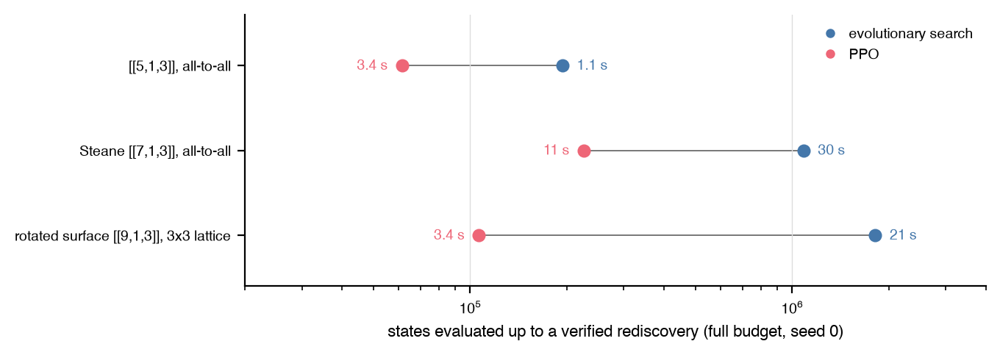

Rediscovery regression¶
uv run autoqec-regress --budget reduced # what the pytest runs
uv run autoqec-regress --budget full --out experiments/regression/regression.json
States evaluated up to a verified rediscovery at the full budget, seed 0,
for the three targets both agents share, with each run's wall time next to
its marker (experiments/regression/figure.py draws it from the two
result files):

Targets (all k = 1, d = 3):
| Target | Graph | Gates | Max gates | Forbidden stabilizer weights |
|---|---|---|---|---|
| [[5,1,3]] 12 | all-to-all on 5 | H, S, CNOT | 14 | 1 |
| Steane [[7,1,3]] 3 | all-to-all on 7 | H, S, CNOT | 20 | 1 to 3 |
| rotated surface [[9,1,3]] 4 | 3x3 square lattice | H, CNOT | 30 | 1 |
rotated surface, LDPC w_max = 4, deg_max = 4, env mask |
3x3 square lattice | H, CNOT | 30 | 1 |
rotated surface, LDPC w_max = 4, deg_max = 4, penalty 0.25 |
3x3 square lattice | H, CNOT | 30 | 1 |
Steane, LDPC w_max = 4, penalty 0.25 |
all-to-all on 7 | H, S, CNOT | 20 | 1 to 3 |
7 qubits, LDPC w_max = 3, penalty 0.25, must fail |
all-to-all on 7 | H, S, CNOT | 20 | 1 |
5 qubits, LDPC w_max = 3, penalty 0.25, must fail |
all-to-all on 5 | H, S, CNOT | 14 | 1 |
The two exclusion targets pass when no verified distance-3 code is found
within budget. On 5 qubits this is a theorem: the [[5,1,3]] code is the
unique 5-qubit distance-3 code and all 15 of its nontrivial stabilizers
have weight 4, so w* = 4 and no w_max = 3 solution exists. On 7
qubits it is empirical: Steane and the second [[7,1,3]] family the
search finds both have w* = 4, and no [[7,1,3]] code generated by
weight-3 elements was found in the recorded budget; the contrast target
steane_ldpc_w4 finds Steane in the same budget. w_max = 4 does not
exclude the [[5,1,3]] code or Steane (both have w* = 4), which is why
the bound for the exclusion targets is 3; on 9 qubits w_max = 4 does
exclude Shor's code 5 (w* = 6). Exclusion targets forbid only weight-1
stabilizers so weight-2 and weight-3 generators stay admissible, and use
the penalty form so that the search path is unconstrained and only the
final code is judged. Every verification reports
min_max_generator_weight (w*) and max_qubit_degree.
Reward during search: normalized Knill-Laflamme 6 reward over all Paulis of
weight 1 and 2, plus the penalty on stabilizer elements of the forbidden
weights (without it the agent pads a [[5,1,3]] code with idle qubits and
still satisfies the [[7,1,3]] and [[9,1,3]] parameters). A success is
verified independently of the reward: the circuit is replayed, the code is
extracted, its distance is computed exactly, and its weight enumerators of
S and N(S) are compared with the reference code. Equal enumerators are
necessary for equivalence under qubit permutations and local Cliffords;
they are reported as enumerators_match_reference, not as a proof of
isomorphism. The full budget restarts with the next seed until the
enumerators match; the reduced budget stops at the first verified
nontrivial [[n,1,3]] code and reports whether it matched.
Results of the full run are in experiments/regression/regression.json (seeds, budgets,
evaluations, wall time, the found circuits and stabilizers). Summary of the
release run (seed 0, batch 512, at most 100,000 circuit evaluations per
attempt, up to 60 attempts; exclusion targets run 5 seeds to exhaustion):
| Target | Gates | Attempts (seeds) | Circuit evaluations | Wall time | Found code | w* / degree | Enumerators match |
|---|---|---|---|---|---|---|---|
| [[5,1,3]] | H, S, CNOT | 1 (seed 0) | 13,824 | 1.1 s | d = 3, 14 gates, non-CSS | 4 / 4 | yes |
| Steane [[7,1,3]] | H, S, CNOT | 3 (seeds 0 to 2) | 54,272 | 29.8 s | d = 3, 19 gates, non-CSS as generated | 4 / 4 | yes |
| rotated surface [[9,1,3]] | H, CNOT | 21 (seeds 0 to 20) | 60,416 | 20.9 s | d = 3, 22 gates, non-CSS as generated | 6 / 4 | yes |
rotated surface, LDPC mask w_max = 4 |
H, CNOT | 10 (seeds 0 to 9) | 78,848 | 44.3 s | d = 3, 28 gates, non-CSS as generated | 4 / 4 | yes |
rotated surface, LDPC penalty w_max = 4 |
H, CNOT | 1 (seed 0) | 10,752 | 11.3 s | d = 3, 30 gates, non-CSS | 4 / 4 | no (not required) |
Steane, LDPC penalty w_max = 4 |
H, S, CNOT | 1 (seed 0) | 67,584 | 47.4 s | d = 3, 18 gates, non-CSS as generated | 4 / 5 | yes |
7 qubits, LDPC penalty w_max = 3 |
H, S, CNOT | 5 (seeds 0 to 4) | 501,760 | 154.9 s | none (expected); best reward -3/210 on every seed | n/a | n/a |
5 qubits, LDPC penalty w_max = 3 |
H, S, CNOT | 5 (seeds 0 to 4) | 501,760 | 62.2 s | none (expected); best reward -3/105 on every seed | n/a | n/a |
The w* column is the exact minimum bottleneck generator weight of the
found code: the unconstrained surface-code run returned a code with the
surface enumerators but w* = 6, that is, a code whose sparsest
generating set has a weight-6 element, so equal enumerators do not
certify local-Clifford equivalence to the CSS reference (a local Clifford
preserves weights, so an equivalent code would have w* = 4; the
enumerators of S and N(S) coincide without equivalence here). That
weight enumerators are not a complete invariant is well known: the
classification of self-dual additive codes over GF(4) lists 675
inequivalent codes at 9 qubits with 320 distinct enumerators
7, and local-Clifford equivalence has a polynomial-time
test 8. The regression reports the enumerator match as
a necessary check, and w* as a second invariant. The
mask-constrained run matched the enumerators with w* = 4 in 10
attempts against 21 unconstrained. The penalty-constrained surface target
accepts any verified distance-3 code within the bound: in a first full
run it produced one on all 60 attempts (31 distinct enumerator classes,
none the surface code's; kept in the JSON under first_run_attempts),
so the surface code is one of many weight-4 [[9,1,3]] codes reachable
on the lattice and a stop-at-first search rarely lands on it. On the
exclusion targets the best reward stayed at three undetected weight-2
errors on every seed, that is, the search kept codes within w_max = 3
that miss distance 3 by three errors rather than taking the 0.25 penalty
of a weight-4 solution.
"Non-CSS as generated" means the found generators mix X and Z; the
enumerators equal those of the CSS reference, consistent with a local
Clifford equivalence, which the check does not prove. Attempts that ended
in a verified nontrivial [[n,1,3]] code with different enumerators are kept
in the JSON under attempts. The reduced budget (batch 256, 15,000
evaluations per attempt, at most 3 attempts, 1 seed for exclusion
targets, no enumerator requirement) finishes all eight targets in about
60 s and is what tests/test_regress.py runs.
Hit rates from tallies of independent seeds (batch 512, 60,000
evaluations per run, every run produced a verified nontrivial [[n,1,3]]
code): on 7 qubits all-to-all the search finds two families, with
stabilizer enumerators [1,0,0,0,21,0,42,0] (Steane) and
[1,0,0,0,13,24,18,8]; Steane appeared in 35 of 80 runs (H, S, CNOT and
H, CNOT gate sets behave alike). On the 3x3 lattice the [[9,1,3]] codes are
far more varied: the rotated-surface enumerators appeared in 3 of 60 runs
with H, CNOT and in 0 of 30 runs with H, S, CNOT, which is why the surface
target uses H, CNOT and the full budget allows up to 60 attempts.
PPO agent¶
agents/ppo.py is a PPO implementation 9 over
CodeDiscoveryEnv, in the spirit of 10: a
policy over gate choices conditioned on the current tableau, trained on the
Knill-Laflamme reward. The batch dimension of the environment is the
vectorized environment (256 parallel episodes by default), auto_reset is
on, and the reward is the dense mode (state reward after every gate). An
episode ends when the state reward reaches 0 (every term of the reward is
satisfied) or after the target's gate cap.
Network and hyperparameters (PPOConfig defaults):
| Item | Value |
|---|---|
| Observation | the 2n x 2n X and Z bits of the whole tableau (destabilizers and stabilizers, sign column dropped), mapped to {-1, +1}; check_matrix (only the (n - k) x 2n stabilizer block, as in 10) is an option |
| Network | MLP trunk, two tanh layers of 256 units, orthogonal init; linear policy head over the action table and linear value head sharing the trunk. 99,615 parameters for [[5,1,3]] (100 inputs, 30 actions), 130,873 for Steane (196 inputs, 56 actions), 157,730 for the 3x3 surface target (324 inputs, 33 actions). policy="auto" (the default) switches to the permutation-equivariant per-qubit network from 12 qubits on; see "Policy choice" below |
| Rollout | 16 steps of 256 environments, so 4,096 transitions per update |
| Optimization | Adam, learning rate 3e-4, 4 epochs, minibatch 512, gradient norm clipped at 0.5 |
| PPO | clip 0.2, gamma 0.98, GAE 11 lambda 0.95, value coefficient 0.5, entropy coefficient 0.01, advantages normalized per update |
| Masking | the action table already contains only the gates the graph allows, so no graph masking is needed there; graph_action_mask builds a static mask when a table has actions outside a graph; a dynamic mask forbids undoing the previous gate when it is an involution (H, CNOT, CZ, SWAP, Paulis); an action_mask() method on the environment, if present, is intersected with these. Masked actions get logit -1e9 |
| Threads | CPU only, torch and BLAS capped at 6 threads |
Run on one target, or the regression:
uv run --extra rl python -m autoqec_sim.agents.ppo --n 5 --max-steps 14 --verbose
uv run --extra rl autoqec-ppo --budget reduced
uv run --extra rl autoqec-ppo --budget full --out experiments/regression/regression_ppo.json
(autoqec-ppo is the console script for autoqec_sim.agents.ppo_regress.)
Policy choice. PPOConfig.policy selects the actor-critic from
agents/policies.py: "mlp" is the flat network of the table above;
"equivariant" is a per-qubit permutation-equivariant network (a shared MLP
over the qubit's two tableau columns plus a mean-pooled context, per-gate
heads on the qubit embedding for single-qubit gates and on the ordered pair
of embeddings for two-qubit gates, value head on the pooled embeddings,
128 units, 123,907 parameters on the 4x4 lattice against 344,897 for the
flat MLP); "auto", the default, is equivariant when the environment has
n >= 12 qubits and mlp otherwise, so the regression targets (n <= 9)
keep the networks and results above. The equivariant policy is the
recommendation for n >= 12: in the scaling probe it reaches a clean
[[16, 1, 4]] in 217k to 258k env steps on 3 of 3 seeds where the flat
MLP at batch 256 never does; the flat MLP at n >= 12 needs 1024
parallel episodes and ent_coef = 0.001 (4.2M to 4.7M steps). Both take
the same observation and masks from EnvAdapter and emit logits in the
order of the action table; PPOAgent.policy holds the resolved choice and
the result's config["policy_resolved"] records it.
ppo_regress uses the same targets, reward (Knill-Laflamme plus the
low-weight-stabilizer penalty), replay, and verification (exact distance,
enumerators of S and N(S) against the reference) as regress. The
difference in protocol: a PPO run does not stop at its first success; every
distinct code the policy produces (deduplicated by the reduced row echelon
form of its stabilizer block) is verified, and the full budget stops at the
first code whose enumerators match, moving to the next seed only if a run
exhausts 3,000,000 state evaluations or 20 minutes. The reduced budget
(400,000 state evaluations, 90 s, one seed) stops at the first verified
nontrivial [[n,1,3]] code and is what tests/test_ppo.py runs on the
[[5,1,3]] target (1.5 s).
Results of the full run, seed 0, in experiments/regression/regression_ppo.json,
against the evolutionary search's experiments/regression/regression.json on the same
targets. Circuits are episodes for PPO and evaluated sequences for the
evolutionary search; state evaluations are reward calls per batch element
(one PPO environment step of the batch is 256 of them; one evolutionary
circuit costs up to max gates of them, so its count is an upper bound).
| Target | Agent | Seeds | Circuits | State evaluations | Wall time | First d = 3 code (circuits) | Enumerators match |
|---|---|---|---|---|---|---|---|
| [[5,1,3]] | evolutionary | 1 | 13,824 | about 193,000 | 1.1 s | 13,824 | yes |
| [[5,1,3]] | PPO | 1 | 4,352 | 61,440 | 1.4 s | 4,352 | yes |
| Steane [[7,1,3]] | evolutionary | 3 | 54,272 | about 1,085,000 | 28.9 s | 22,528 | yes |
| Steane [[7,1,3]] | PPO | 1 | 11,264 | 225,280 | 10.7 s | 3,841 | yes |
| rotated surface [[9,1,3]] | evolutionary | 21 | 60,416 | about 1,812,000 | 20.5 s | 1,024 | yes |
| rotated surface [[9,1,3]] | PPO | 1 | 3,333 | 106,496 | 3.4 s | 1,025 | yes |
On the fair axis (state evaluations) PPO needs 3 times fewer for
[[5,1,3]], 5 times fewer for Steane, and 17 times fewer for the surface
code; per state evaluation it is slower (network forward and backward on
top of the reward kernel), so the wall-time gap is smaller. The Steane run
saw the same two 7-qubit families as the evolutionary tallies
([1,0,0,0,13,24,18,8] five times before Steane once). The surface run
produced 11 distinct enumerator families among 13 verified codes before the
rotated-surface enumerators appeared, at a per-episode success rate of 60
percent by update 26; with the evolutionary search that family appeared in
about one run in twenty. The matched surface circuit has 15 gates against 22 for the
evolutionary one. Seeds 1 to 3 at the full budget also matched every target
on the first attempt: 53,000 to 66,000 state evaluations for [[5,1,3]],
119,000 to 160,000 for Steane, and 61,000 to 176,000 for the surface code
(3 to 12 s per target). The evolutionary column is one run from one seed
sequence, not an average.
The 4x4 target. ppo_regress.PPO_ONLY_TARGETS adds rotated_surface_16:
[[16, 1, 4]] on the 4x4 lattice with H and CNOT, 50-gate episodes,
weight-1 stabilizers forbidden, the regression's reward (normalized
Knill-Laflamme term over the 16,248 Paulis of weight at most 3 plus the
padding penalty) and match criterion (enumerators of S and N(S) against
known_codes.ROTATED_SURFACE_16, w* = 4, degree 4). It runs in the
full budget only, with its own budget of 1,000,000 env steps in one
attempt (TARGET_BUDGETS; the reduced budget skips it), and
policy="auto" resolves to the equivariant network (123,907 parameters).
Two seeds at 2 threads (autoqec-ppo --budget full --targets
rotated_surface_16 --seed S --threads 2, experiments/regression/regression_ppo_4x4_seed{0,1}.json;
the machine was shared with other sessions at a load of 20 to 150, about
830 env steps per second):
| Seed | Env steps | Episodes | Wall time | First verified [[16,1,4]] | Distinct [[16,1,4]] codes verified | Enumerators match | Success rate, last 25 updates |
|---|---|---|---|---|---|---|---|
| 0 | 1,003,520 | 19,968 | 1,203 s | 88,576 env steps (93 s), 46 gates, non-CSS, w* = 5, degree 6 |
66 | no | 0.006 |
| 1 | 1,003,520 | 19,968 | 1,237 s | 268,288 env steps (312 s), 48 gates, non-CSS, w* = 6, degree 5 |
2 | no | 0.000 |
Both seeds reach distance 4 within the range the scaling probe reported
for this policy (217k to 258k env steps on the level distance reward), so
the equivariant policy solves the 4x4 exploration problem under the
regression's reward as well. Neither seed matches the rotated surface
enumerators in 1M steps, so rediscovered is false for this target: the
68 verified codes fall into 68 distinct enumerator families, all non-CSS,
and the trained policy does not consolidate on distance-4 states under
this reward (0 to 3 percent of episodes per quarter of the run, against
56 to 64 percent after 1M steps on the level distance reward in
experiments/scaling/REPORT.md). At 3x3 the surface enumerators appeared
after 11 families; at 4x4 the family count is far larger and a
stop-at-match search at this budget does not land on the CSS code. What
the target does certify is a verified [[16, 1, 4]] code on the lattice
in under 300k env steps on both seeds.
Missing for parity with 10:
- Noise-aware training at larger scale. The noise-aware experiment below
trains on the circuit-level fault reward under three profiles at
n <= 16; a channel-weighted code-level error set (ErrorSet.from_channel) has not been used as a training reward. - Larger
nandk > 1. The flat MLP input grows as4 n^2and the all-to-all action space asO(n^2); the equivariant policy removes the first but not the second, there is no attention policy and no curriculum over error weight, and the reward cost grows as3^w C(n, w).k = 1has been exercised atn <= 16(the rediscovery regression atn <= 9, the scaling probe atn = 16);k > 1only in the failed LDPC runs of the scaling probe. - Training conveniences: no learning-rate annealing, no checkpointing or policy export, no evaluation of a trained policy on a different graph (the static graph mask exists and is unit-tested but has not been used for transfer).
- The undo mask is a heuristic of this implementation, not part of Olle et al.
-
Raymond Laflamme, Cesar Miquel, Juan Pablo Paz, and Wojciech Hubert Zurek. Perfect quantum error correcting code. Physical Review Letters, 77:198–201, 1996. arXiv:quant-ph/9602019, doi:10.1103/PhysRevLett.77.198. ↩
-
Charles H. Bennett, David P. DiVincenzo, John A. Smolin, and William K. Wootters. Mixed-state entanglement and quantum error correction. Physical Review A, 54:3824–3851, 1996. arXiv:quant-ph/9604024, doi:10.1103/PhysRevA.54.3824. ↩
-
A. M. Steane. Error correcting codes in quantum theory. Physical Review Letters, 77:793–797, 1996. doi:10.1103/PhysRevLett.77.793. ↩
-
Yu Tomita and Krysta M. Svore. Low-distance surface codes under realistic quantum noise. Physical Review A, 90:062320, 2014. arXiv:1404.3747, doi:10.1103/PhysRevA.90.062320. ↩
-
Peter W. Shor. Scheme for reducing decoherence in quantum computer memory. Physical Review A, 52:R2493–R2496, 1995. doi:10.1103/PhysRevA.52.R2493. ↩
-
Emanuel Knill and Raymond Laflamme. Theory of quantum error-correcting codes. Physical Review A, 55:900–911, 1997. arXiv:quant-ph/9604034, doi:10.1103/PhysRevA.55.900. ↩
-
Lars Eirik Danielsen and Matthew G. Parker. On the classification of all self-dual additive codes over GF(4) of length up to 12. Journal of Combinatorial Theory, Series A, 113:1351–1367, 2006. arXiv:math/0504522, doi:10.1016/j.jcta.2005.12.004. ↩
-
Maarten Van den Nest, Jeroen Dehaene, and Bart De Moor. An efficient algorithm to recognize local Clifford equivalence of graph states. Physical Review A, 70:034302, 2004. arXiv:quant-ph/0405023, doi:10.1103/PhysRevA.70.034302. ↩
-
John Schulman, Filip Wolski, Prafulla Dhariwal, Alec Radford, and Oleg Klimov. Proximal policy optimization algorithms. 2017. arXiv:1707.06347. ↩
-
Jan Olle, Remmy Zen, Matteo Puviani, and Florian Marquardt. Simultaneous discovery of quantum error correction codes and encoders with a noise-aware reinforcement learning agent. npj Quantum Information, 10:126, 2024. arXiv:2311.04750, doi:10.1038/s41534-024-00920-y. ↩↩↩
-
John Schulman, Philipp Moritz, Sergey Levine, Michael Jordan, and Pieter Abbeel. High-dimensional continuous control using generalized advantage estimation. 2015. arXiv:1506.02438. ↩